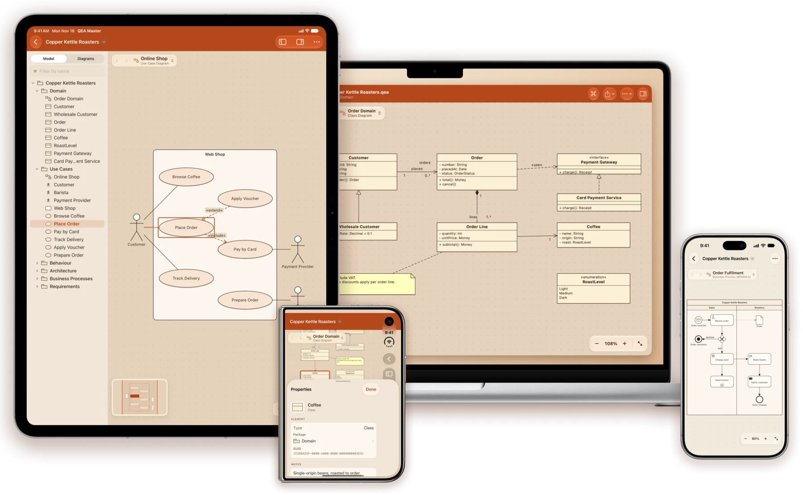
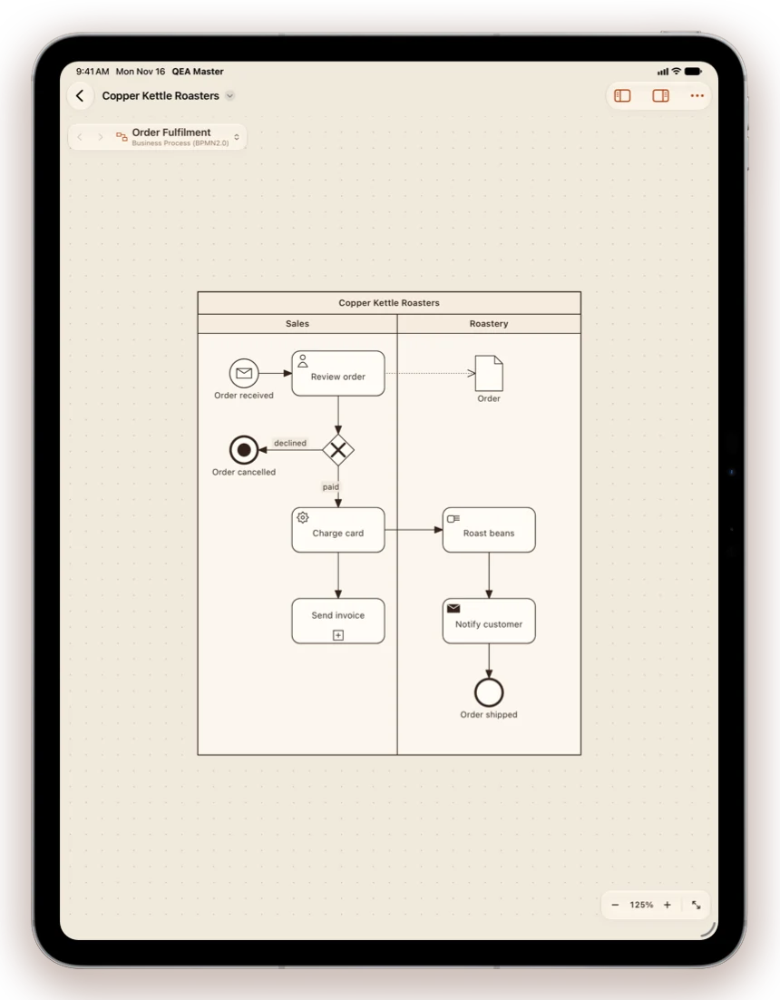
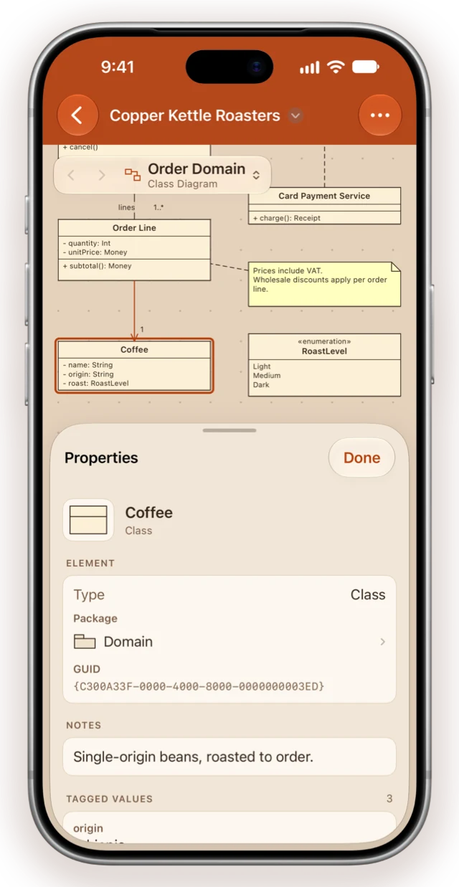
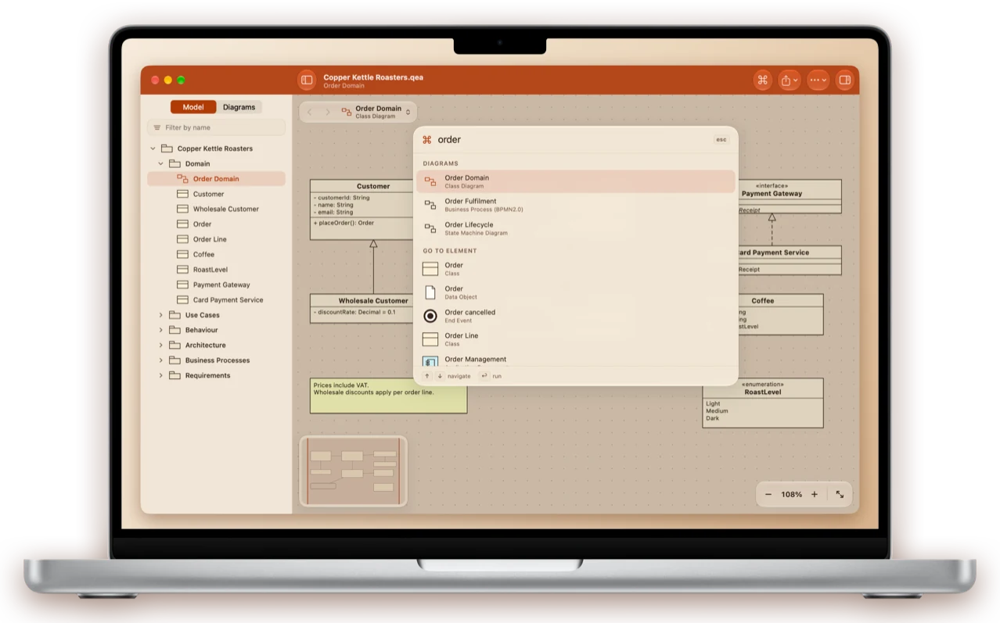
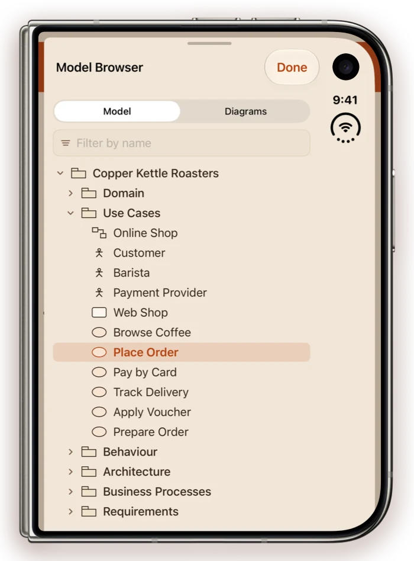
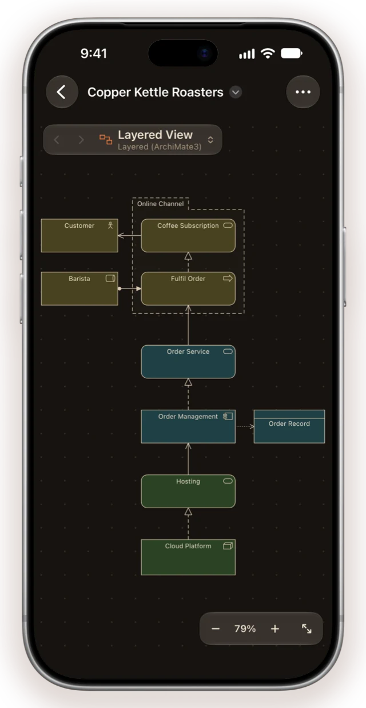

Model repository viewer
Your model repositories, native on iPhone, iPad and Mac
Open .qea and .qeax files and walk through every UML, BPMN and ArchiMate® diagram, element and connector — in a meeting, on the go or at your desk.
For iOS 18, iPadOS 18 and macOS 15 or later

Notation
Every diagram, drawn natively
Shapes stand where the repository put them, drawn by the app itself from the specifications — sharp at any zoom, in the theme you choose.
- UML: classes with their compartments, use cases, activities, states, sequences, components and deployment
- BPMN: tasks with their markers, events, gateways, pools, lanes and data objects
- ArchiMate: every element in its layer colour with its icon, every relationship with its exact line and ends

Properties
Every element, a tap away
Select a shape and Properties shows what the element is and everything it touches, across the whole repository.
- Type, stereotype, notes, tagged values, attributes and operations
- Every incoming and outgoing connector — tap one to go to the other end
- Every diagram the element appears on — tap one to open it with the element selected

Made for Mac
Any diagram or element is a ⌘K away
One search field for every diagram, package, element and connector of the repository, and for every command.
- Model browser, canvas and properties side by side
- Find on the diagram, back and forward, zoom presets and a minimap
- Keyboard shortcuts, menus and printing

Model browser
The whole repository, package by package
Packages, diagrams and elements as a tree, the way the repository keeps them, or every diagram grouped by package.
- Nested packages, elements with their own elements and diagrams
- A filter that searches by name and keeps the path to each match open
- Select a shape on the canvas and the tree opens down to it

Three themes
Terracotta, Light or Dark
Terracotta takes its colours from the app icon: a terracotta bar and a warm clay canvas. Light is bright paper; Dark is espresso with cream lines.
- Switch at any time in Settings — it applies instantly
- Notation fills tuned to each theme, colours from the file kept
- Exported images, PDFs and printouts always use the light paper look

Everything in the file
Your repository, complete
.qea and .qeax files
File-based repositories with an SQLite database inside, such as those saved by Sparx Systems Enterprise Architect, including shared .qeax files in WAL mode.
Packages to members
Packages, diagrams, elements, attributes, operations, tagged values, notes and connectors with roles and multiplicities, as the repository stores them.
Read-only, always
The app reads a copy of the file and never writes to it. A damaged file or a shortcut to a server repository gets a plain explanation instead of an error.
Share and print
Export a diagram as PNG or vector PDF, or every diagram as one PDF with a page per diagram, and print.
Private and offline
No account, no tracking, no network. Repositories are ordinary files in storage you already use, and they never leave your device.
Seven languages
English, German, French, Ukrainian, Spanish, Japanese and Portuguese, with UML terms in each language's established words. Pick one in the app or in system settings.
Take the repository with you
One app for iPhone, iPad and Mac.
Get it on the App Store